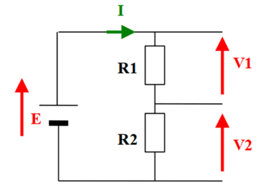

Durée : 1h15 | Consignes : Répondez aux questions de manière précise.
1. Conversion : Convertir le nombre hexadécimal 1F en décimal.
1F = 1*16 + 15*1 = 16 + 15 = 31
2. Logique booléenne : Compléter la table de vérité pour une porte ET avec les entrées A et B.
| A | B | A ET B |
|---|---|---|
| 0 | 0 | 0 |
| 0 | 1 | 0 |
| 1 | 0 | 0 |
| 1 | 1 | 1 |
3. Calcul : Résoudre l’équation 5x + 10 = 3x + 24.
5x + 10 = 3x + 24
5x - 3x = 24 - 10
2x = 14
x = 7
4. QCM : Quel est la conversion de 1011 (binaire) en décimal ?
Pourquoi ?
1011 = 1*8 + 0*4 + 1*2 + 1*1 = 8 + 0 + 2 + 1 = 11
1. Calcul : Dans un circuit en série avec 3 résistances en série (100 Ω, 200 Ω, 300 Ω) et une tension de 12 V, calculer le courant total.
U = 12 V, R_total = 600 Ω, I = U / R_total = 12 / 600 = 0.02 A
2. Théorie : Expliquer la différence entre un signal analogique et un signal numérique.
Un signal analogique est continu et peut prendre n'importe quelle valeur dans une plage donnée, tandis qu'un signal numérique est discret et ne peut prendre que des valeurs spécifiques.
1. Schéma : Voici un schéma electrique.

Comment appel-on une telle installation ?
Un tel montage est appelé un diviseur de tension.
Calculez la tension V2, aux bornes de R2.
U2 = (R2 / (R1 + R2)) * E = (2000 / (1000 + 2000)) * 9 = 6 V
Calculez la courant I2, dans la branche contenant R2.
I2 = U2 / R2 = 6 / 2000 = 3 mA
2. Pratique : À quoi sert un multimètre en électronique ?
Un multimètre est un instrument de mesure qui permet de mesurer plusieurs grandeurs électriques comme la tension, le courant et la résistance.
1. Théorie : Expliquer la différence entre une adresse IP et un nom de domaine.
Une adresse IP est un numéro unique attribué à chaque appareil sur un réseau. un nom de domaine est un nom lisible par l'homme qui correspond à une adresse IP.
2. QCM : Parmi les affirmations suivantes, laquelle est fausse ?
3. QCM : Quel protocole est utilisé pour transférer des fichiers sur un réseau ?
4. Théorie : Expliquer le rôle du protocole DNS.
Le protocole DNS (Domain Name System) permet de traduire les noms de domaine en adresses IP.
1. Algorithme : Écrire un algorithme en pseudocode pour calculer la moyenne de 3 notes saisies par l’utilisateur.
Début
Lire note1
Lire note2
Lire note3
moyenne = (note1 + note2 + note3) / 3
Afficher "La moyenne est : " + moyenne
Fin
2. Algorithme : Donner 3 types de variables et quels sont leurs différences ?
Int, Float, String. Les int sont des nombres entiers, les float sont des nombres à virgule flottante et les string sont des chaînes de caractères.
3. QCM : Quel type de cyberattaque consiste à submerger un serveur de requêtes pour le rendre inaccessible ?
4. Théorie : Expliquer le fonctionnement d'une architecture client-serveur en répondant aux questions suivantes :
Envoie des requêtes (ex : navigateur web) et affiche les résultats.
Exemple : Un site web où le navigateur (client) envoie des requêtes au serveur web pour récupérer les pages.